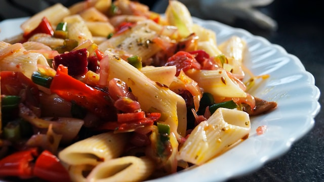

Pasta Recipe

Description
This pasta salad recipe was given to me by a dear friend many years ago, and I've been making it ever since! It's great for barbecues.
Ingredients
-
Pasta: This colorful, top-rated pasta salad starts with one pound of tri-colored spiral pasta.
-
Dressing: Use a bottle of store-bought Italian-style dressing or, if you want to go the extra mile
-
Seasoning mix: Salad seasoning mix lends tons of savory flavor.
-
Vegetables: You will need cherry tomatoes, three bell peppers (green, yellow, and red), and a can of black olives.
Steps
Here is a brief overview of what you can expect when you make pasta salad at home:
- Cook and drain the pasta.
- Whisk the dressing with the seasoning mix.
- Combine the pasta with the vegetables, then toss in the seasoned dressing.
Back to main page